공조냉동기계산업기사 (2016-05-08 기출문제)
1과목: 공기조화
1. 건구온도 10℃, 습구온도 3℃의 공기를 덕트 중 재열기로 건구온도 25℃까지 가열하고자 한다. 재열기를 통하는 공기량이 1500 m3/min인 경우, 재열기에 필요한 열량은? (단, 공기의 비체적은 0.849 m3/kg이다.)
- 191025 kcal/min
- 28017 kcal/min
- 8200 kcal/min
- 6360 kcal/min
(정답률: 45%)

2. 공기조화설비에 사용되는 냉각탑에 관한 설명으로 옳은 것은?
- 냉각탑의 어프로치는 냉각탑의 입구 수온과 그때의 외기 건구온도와의 차이다.
- 강제통풍식 냉각탑의 어프로치는 일반적으로 약 5℃이다.
- 냉각탑을 통과하는 공기량(kg/h)을 냉각탑의 냉각수량(kg/h)으로 나눈 값을 수공기비라 한다.
- 냉각탑의 레인지는 냉각탑의 출구 공기온도와 입구 공기온도의 차이다.
(정답률: 66%)
3. 아래 그림은 공기조화기 내부에서의 공기의 변화를 나타낸 것이다. 이 중에서 냉각코일에서 나타나는 상태변화는 공기선도상 어느 점을 나타내는가?
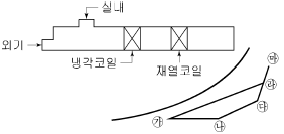
- ㉮ - ㉯
- ㉯ - ㉰
- ㉱ - ㉮
- ㉱ - ㉲
(정답률: 81%)
4. 외기온도 13℃(포화 수증기압 12.83mmHg)이며 절대습도 0.008kg/kg일 때의 상대습도 RH는? (단, 대기압은 760mmHg이다.)
- 약 37%
- 약 46%
- 약 75%
- 약 82%
(정답률: 50%)
5. 공기 세정기에 관한 설명으로 틀린 것은?
- 공기 세정기의 통과풍속은 일반적으로 약 2~3m/s이다.
- 공기 세정기의 가습기는 노즐에서 물을 분무하여 공기에 충분히 접촉시켜 세정과 가습을 하는 것이다.
- 공기 세정기의 구조는 루버, 분무노즐, 플러딩노즐, 일리미네이터 등이 케이싱 속에 내장되어 있다.
- 공기 세정기의 분무 수압은 노즐 성능상 약 20~50kPa이다.
(정답률: 85%)
6. 다음 그림에 대한 설명으로 틀린 것은?
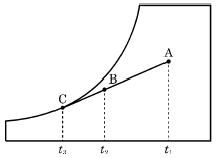
- A → B는 냉각감습 과정이다.
- 바이패스팩터(BF)는
 이다.
이다. - 코일의 열수가 증가하면 BF는 증가한다.
- BF가 작으면 공기의 통과저항이 커져 송풍기 동력이 증대될 수 있다.
(정답률: 70%)
7. 상당외기온도차를 구하기 위한 요소로 가장 거리가 먼 것은?
- 흡수율
- 표면 열전달률(kcal/m2·h·℃)
- 직달 일사량(kcal/m2·h)
- 외기온도(℃)
(정답률: 72%)
8. 냉방 시 유리를 통한 일사 취득열량을 줄이기 위한 방법으로 틀린 것은?
- 유리창의 입사각을 적게 한다.
- 투과율을 적게 한다.
- 반사율을 크게 한다.
- 차폐계수를 적게 한다.
(정답률: 75%)
9. 다음 중 중앙식 공조방식이 아닌 것은?
- 정풍량 단일 덕트방식
- 2관식 유인유닛방식
- 각층 유닛방식
- 패키지 유닛방식
(정답률: 73%)
10. 냉방부하 계산 시 상당외기온도차를 이용하는 경우는?
- 유리창의 취득열량
- 내벽의 취득열량
- 침입외기 취득열량
- 외벽의 취득열량
(정답률: 71%)
11. 600 rpm으로 운전되는 송풍기의 풍량이 400m3/min, 전압 40 mmAq, 소요동력 4 kW의 성능을 나타낸다. 이때 회전수를 700 rpm으로 변화시키면 몇 kW의 소요동력이 필요한가?
- 5.44kW
- 6.35kW
- 7.27kW
- 8.47kW
(정답률: 52%)
12. 노즐형 취출구로서 취출구 방향을 좌우상하로 바꿀 수 있는 취출구는?
- 유니버설형
- 펑커루버형
- 팬(pan)형
- T라인(T-line)형
(정답률: 83%)
13. 유효온도(ET, Effective Temperature)의 요소에 해당하지 않는 것은?
- 온도
- 기류
- 청정도
- 습도
(정답률: 87%)
14. 다음 중 건축물의 출입문으로부터 극간풍 영향을 방지하는 방법으로 가장 거리가 먼 것은?
- 회전문을 설치한다.
- 이중문을 충분한 간격으로 설치한다.
- 출입문에 블라인드를 설치한다.
- 에어커튼을 설치한다.
(정답률: 86%)
15. 공기조화의 분류에서 산업용 공기조화의 적용범위에 해당하지 않는 것은?
- 실험실의 실험조건을 위한 공조
- 양조장에서 술의 숙성온도를 위한 공조
- 반도체 공장에서 제품의 품질 향상을 위한 공조
- 호텔에서 근무하는 근로자의 근무환경 개선을 위한 공조
(정답률: 90%)
16. 대사량을 나타내는 단위로 쾌적상태에서의 안정 시 대사량을 기준으로 하는 단위는?
- RMR
- clo
- met
- ET
(정답률: 81%)
17. 난방부하를 줄일 수 있는 요인이 아닌 것은?
- 극간풍에 의한 잠열
- 태양열에 의한 복사열
- 인체의 발생열
- 기계의 발생열
(정답률: 61%)
18. 물 또는 온수를 직접 공기 중에 분사하는 방식의 수분무식 가습장치의 종류에 해당되지 않는 것은?
- 원심식
- 초음파식
- 분무식
- 가습팬식
(정답률: 76%)
19. 고속덕트의 특징에 관한 설명으로 틀린 것은?
- 소음이 작다.
- 운전비가 증대한다.
- 마찰에 의한 압력손실이 크다.
- 장방형 대신에 스파이럴관이나 원형덕트를 사용하는 경우가 많다.
(정답률: 88%)
20. 공기조화의 단일덕트 정풍량 방식의 특징에 관한 설명으로 틀린 것은?
- 각 실이나 존의 부하변동에 즉시 대응할 수 있다.
- 보수관리가 용이하다.
- 외기냉방이 가능하고 전열교환기 설치도 가능하다.
- 고성능 필터 사용이 가능하다.
(정답률: 71%)
2과목: 냉동공학
21. 냉동효과에 대한 설명으로 옳은 것은?
- 증발기에서 단위 중량의 냉매가 흡수하는 열량
- 응축기에서 단위 중량의 냉매가 방출하는 열량
- 압축 일을 열량의 단위로 환산한 것
- 압축기 출·입구 냉매의 엔탈피 차
(정답률: 64%)
22. 아래와 같이 운전되어 지고 있는 냉동사이클의 성적 계수는?
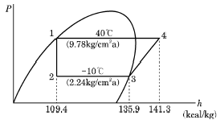
- 2.1
- 3.3
- 4.9
- 5.9
(정답률: 70%)
23. 헬라이드 토치는 프레온계 냉매의 누설검지기이다. 누설 시 식별방법은?
- 불꽃의 크기
- 연료의 소비량
- 불꽃의 온도
- 불꽃의 색깔
(정답률: 90%)
24. 냉동장치에서 사용되는 각종 제어동작에 대한 설명으로 틀린 것은?
- 2위치 동작은 스위치의 온, 오프 신호에 의한 동작이다.
- 3위치 동작은 상, 중, 하 신호에 따른 동작이다.
- 비례동작은 입력신호의 양에 대응하여 제어량을 구하는 것이다.
- 다위치 동작은 여러 대의 피제어기기를 단계적으로 운전 또는 정지시키기 위한 것이다.
(정답률: 80%)
25. 다음 열 및 열펌프에 관한 설명으로 옳은 것은?
- 일의 열당량은
 이다. 이것은 427kg·m의 일이 열로 변할 때, 1kcal의 열량이 되는 것이다.
이다. 이것은 427kg·m의 일이 열로 변할 때, 1kcal의 열량이 되는 것이다. - 응축온도가 일정하고 증발온도가 내려가면 일반적을 토출 가스온도가 높아지기 때문에 열펌프의 능력이 상승된다.
- 비열 0.5kcal/kg·℃, 비중량 1.2kg/L의 액체 2L를 온도 1℃ 상승시키기 위해서는 2kcal의 열량을 필요로 한다.
- 냉매에 대해서 열의 출입이 없는 과정을 등온압축이라 한다.
(정답률: 86%)
26. 냉동기유에 대한 냉매의 용해성이 가장 큰 것은? (단, 동일한 조건으로 가정한다.)
- R-113
- R-22
- R-115
- R-717
(정답률: 56%)
27. 냉동용 스크루 압축기에 대한 설명으로 틀린 것은?
- 왕복동식에 비해 체적효율과 단열효율이 높다.
- 스크루 압축기의 로터와 축은 일체식으로 되어 있고, 구동은 수 로터에 의해 이루어진다.
- 스크루 압축기의 로터 구성은 다양하나 일반적으로 사용되고 있는 것은 수 로터 4개, 암 로터 4개인 것이다.
- 흡입, 압축, 토출과정인 3행정으로 이루어진다.
(정답률: 76%)
28. LNG(액화천연가스) 냉열이용 방법 중 직접이용방식에 속하지 않는 것은?
- 공기액화분리
- 염소액화장치
- 냉열발전
- 액체탄산가스 제조
(정답률: 63%)
29. 증발기의 분류 중 액체 냉각용 증발기로 가장 거리가 먼 것은?
- 탱크형 증발기
- 보데로형 증발기
- 나관코일식 증발기
- 만액식 셸 엔드 튜브식 증발기
(정답률: 54%)
30. 헬라이드 토치를 이용한 누설검사로 적절하지 않은 냉매는?
- R-717
- R-123
- R-22
- R-114
(정답률: 72%)
31. 냉동능력 20RT, 축동력 12.6kW인 냉동장치에 사용되는 수냉식 응축기의 열통과율 676kcal/m2·h·℃ 전열량의 외표면적 15m2, 냉각수량 270L/min, 냉각수 입구온도 30℃일 때, 응축온도는? (단, 냉매와 물의 온도차는 산술평균 온도차를 사용한다.)(오류 신고가 접수된 문제입니다. 반드시 정답과 해설을 확인하시기 바랍니다.)
- 35℃
- 40℃
- 45℃
- 50℃
(정답률: 44%)
32. 기계적인 냉동방법 중 물을 냉매로 쓸 수 있는 냉동 방식이 아닌 것은?
- 증기분사식
- 공기압축식
- 흡수식
- 진공식
(정답률: 63%)
33. 저온유체 중에서 1기압에서 가장 낮은 비등점을 갖는 유체는 어느 것인가?
- 아르곤
- 질소
- 헬륨
- 네온
(정답률: 73%)
34. -10℃의 얼음 10kg을 100℃의 증기로 변화하는데 필요한 전열량은? (단, 얼음의 비열은 0.5kcal/kg·℃이고 융해잠열은 80kcal/kg, 물의 증발잠열은 539kcal/kg이다.)
- 1850 kcal
- 3660 kcal
- 7240 kcal
- 9120 kcal
(정답률: 58%)
35. 1HP는 약 몇 Btu/h인가?
- 172 Btu/h
- 252 Btu/h
- 1⑤3 Btu/h
- 2547.6 Btu/h
(정답률: 61%)
36. 팽창밸브를 통하여 증발기에 유입되는 냉매액의 엔탈피를 F, 증발기 출구 엔탈피를 A, 포화액의 엔탈피를 G라 할 때, 팽창밸브를 통과한 곳에서 증기로 된 냉매의 양의 계산식으로 옳은 것은? (단, P : 압력, h : 엔탈비를 나타낸다.)
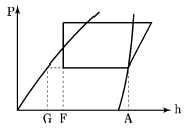
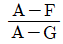
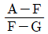
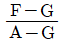
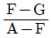
(정답률: 64%)
37. 냉동장치에서 고압측에 설치하는 장치가 아닌 것은?
- 수액기
- 팽창밸브
- 드라이어
- 액분리기
(정답률: 62%)
38. -20℃의 암모니아 포화액의 엔탈피가 75kcal/kg이며, 동일 온도에서 건조포화증기의 엔탈피가 403kcal/kg이다. 이 냉매액이 팽창밸브를 통과하여 증발기에 유입될때의 냉매의 엔탈피가 160kcal/kg이었다면 중량비로 약 몇 %가 액체 상태인가?
- 16%
- 26%
- 74%
- 84%
(정답률: 60%)
39. 암모니아를 냉매로 사용하는 냉동장치에서 응축압력의 상승원인으로 가장 거리가 먼 것은?
- 냉매가 과냉각 되었을 때
- 불응축가스가 혼입되었을 때
- 냉매가 과충전되었을 때
- 응축기 냉각관에 물 때 및 유막이 형성되었을 때
(정답률: 65%)
40. 표준냉동사이클에서 팽창밸브를 냉매가 통과하는 동안 변화되지 않는 것은?
- 냉매의 온도
- 냉매의 압력
- 냉매의 엔탈피
- 냉매의 엔트로피
(정답률: 80%)
3과목: 배관일반
41. 급탕배관이 벽이나 바닥을 관통할 때 슬리브(sleeve)를 설치하는 이유로 가장 적절한 것은?
- 배관의 진동을 건물 구조물에 전달되지 않도록 하기 위하여
- 배관의 중량을 건물 구조물에 지지하기 위하여
- 관의 신축이 자유롭고 배관의 교체나 수리를 편리하게 하기 위하여
- 배관의 마찰저항을 감소시켜 온수의 순환을 균일하게 하기 위하여
(정답률: 78%)
42. 냉동 설비에서 고온·고압의 냉매 기체가 흐르는 배관은?
- 증발기와 압축기 사이 배관
- 응축기와 수액기 사이 배관
- 압축기와 응축기 사이 배관
- 팽창밸브와 증발기 사이 배관
(정답률: 76%)
43. 냉매 배관 시공 시 주의사항으로 틀린 것은?
- 온도 변화에 의한 신축을 충분히 고려해야 한다.
- 배관 재료는 냉매종류, 온도, 용도에 따라 선택한다.
- 배관이 고온의 장소를 통과할 때에는 단열조치한다.
- 수평 배관은 냉매가 흐르는 방향으로 상향구배 한다.
(정답률: 86%)
44. 급수방식 중 펌프 직송방식의 펌프 운전을 위한 검지방식이 아닌 것은?
- 압력검지식
- 유량검지식
- 수위검지식
- 저항검지식
(정답률: 69%)
45. 증기 관말 트랩 바이패스 설치 시 필요 없는 부속은?
- 엘보
- 유니온
- 글로브 밸브
- 안전 밸브
(정답률: 66%)
46. 수격작용을 방지 또는 경감하는 방법이 아닌 것은?
- 유속을 낮춘다.
- 격막식 에어 챔버를 설치한다.
- 토출밸브의 개폐시간을 짧게 한다.
- 플라이 휠을 달아 펌프속도 변화를 완만하게 한다.
(정답률: 82%)
47. 액화 천연가스의 지상 저장탱크에 대한 설명으로 틀린 것은?
- 지상 저장 탱크는 금속 2중벽 탱크가 대표적이다.
- 내부탱크는 약 -162℃ 정도의 초저온에 견딜 수 있어야 한다.
- 외부 탱크는 일반적으로 연강으로 만들어진다.
- 증발 가스량이 지하 저장 탱크보다 많고 저렴하며 안전하다.
(정답률: 77%)
48. 디스크 증기 트랩이라고도 하며 고압, 중압, 저압 등의 어느 곳에나 사용 가능한 증기 트랩은?
- 실로폰 트랩
- 그리스 트랩
- 충격식 트랩
- 버킷 트랩
(정답률: 56%)
49. 급탕 주관의 배관길이가 300m, 환탕 주관의 배관길이가 50m일 때 강제순환식 온수순환 펌프의 전 양정은?
- 5m
- 3m
- 2m
- 1m
(정답률: 54%)
50. 간접배수관의 관경이 25A일 때 배수구 공간으로 최소 몇 mm가 적당한가?
- 50
- 100
- 150
- 200
(정답률: 75%)
51. 급탕설비에 대한 설명으로 틀린 것은?
- 순환방식은 중력식과 강제식이 있다.
- 배관의 구배는 중력순환식의 경우 1/150, 강제순환식의 경우 1/200 정도이다.
- 신축이음쇠의 설치는 강관은 20m, 동관은 30m마다 1개씩 설치한다.
- 급탕량은 사용 인원이나 사용 기구 수에 의해 구한다.
(정답률: 81%)
52. 관의 종류에 따른 접합방법으로 틀린 것은?
- 강관 – 나사접합
- 주철관 – 소켓접합
- 연관 – 플라스턴접합
- 콘크리트관 – 용접접합
(정답률: 83%)
53. 패널난방(panel heating)은 열의 전달방법 중 주로 어느 것을 이용한 것인가?
- 전도
- 대류
- 복사
- 전파
(정답률: 84%)
54. 스케줄 번호(schedule No.)를 바르게 나타낸 공식은? (단, S : 허용응력(kg/mm2), P : 사용압력(kg/cm2))
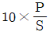
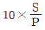
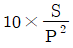
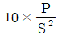
(정답률: 72%)
55. 기수 혼합 급탕기에서 증기를 물에 직접 분사시켜 가열하면 압력차로 인해 발생하는 소음을 줄이기 위해 사용하는 설비는?
- 안전밸브
- 스팀 사일런서
- 응축수 트랩
- 가열코일
(정답률: 90%)
56. 펌프의 베이퍼 록 현상에 대한 발생 요인이 아닌 것은?
- 흡입관 지름이 큰 경우
- 액 자체 또는 흡입배관 외부의 온도가 상승할 경우
- 펌프 냉각기가 작동하지 않거나 설치되지 않은 경우
- 흡입 관로의 막힘, 스케일 부착 등에 의한 저항이 증가한 경우
(정답률: 78%)
57. 배관의 신축 이음 중 허용길이가 커서 설치장소가 많이 필요하지만 고온, 고압배관의 신축 흡수용으로 적합한 형식은?
- 루프(loop)형
- 슬리브(sleeve)형
- 벨로스(bellows)형
- 스위블(swivel)형
(정답률: 74%)
58. 고온수 난방의 가압방법이 아닌 것은?
- 브리드 인 가압방식
- 정수두 가압방식
- 증기 가압방식
- 펌프 가압방식
(정답률: 54%)
59. 냉각탑 주위배관 시 유의사항으로 틀린 것은?
- 2대 이상의 개방형 냉각탑을 병렬로 연결할 때 냉각탑의 수위를 동일하게 한다.
- 배수 및 오버플로관은 직접배수로 한다.
- 냉각탑을 동절기에 운전할 때는 동결방지를 고려한다.
- 냉각수 출입구 측 배관은 방진이음을 설치하여 냉각탑의 진동이 배관에 전달되지 않도록 한다.
(정답률: 64%)
60. 배수 수평관의 관경이 65mm일 때 최소구배는?
- 1/10
- 1/20
- 1/50
- 1/100
(정답률: 63%)
4과목: 전기제어공학
61. 서보기구와 관계가 가장 깊은 것은?
- 정전압 장치
- A/D 변환기
- 추적용 레이더
- 가정용 보일러
(정답률: 68%)
62. 다음 블록선도의 전달 함수의 극점과 영점은?
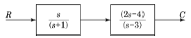
- 영점 0, 2, 극점 –1, 3
- 영점 1, -3, 극점 0, -2
- 영점 0, -1, 극점 2, 3
- 영점 0, -3, 극점 –1, 2
(정답률: 56%)
63. 제어기기의 대표적인 것으로는 검출기, 변환기, 증폭기, 조작기기를 들 수 있는데 서보모터는 어디에 속하는가?
- 검출기
- 변환기
- 증폭기
- 조작기기
(정답률: 84%)
64. 프로세스 제어계의 제어량이 아닌 것은?
- 방위
- 유량
- 압력
- 밀도
(정답률: 71%)
65. 시퀀스제어에 관한 사항으로 옳은 것은?
- 조절기용이다.
- 입력과 출력의 비교장치가 필요하다.
- 한시동작에 의해서만 제어되는 것이다.
- 제어결과에 따라 조작이 자동적으로 이행된다.
(정답률: 71%)
66. 그림과 같은 회로망에서 전류를 계산하는데 옳은 식은?
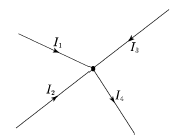
- I1+I2=I3+I4
- I1+I3=I2+I4
- I1+I2+I3+I4=0
- I1+I2+I3-I4=0
(정답률: 80%)
67. 제어요소가 제어대상에 주는 양은?
- 조작량
- 제어량
- 기준입력
- 동작신호
(정답률: 63%)
68. 직류 분권전동기의 용도에 적합하지 않은 것은?
- 압연기
- 제지기
- 송풍기
- 기중기
(정답률: 76%)
69. 16μF의 콘덴서 4개를 접속하여 얻을 수 있는 가장 작은 정전용량은 몇 μF인가?
- 2
- 4
- 8
- 16
(정답률: 79%)
70. 100Ω의 전열선에 2A의 전류를 흘렸다면 소모되는 전력은 몇 W인가?
- 100
- 200
- 300
- 400
(정답률: 59%)
71. 60Hz, 6극인 교류 발전기의 회전수는 몇 rpm인가?
- 1200
- 1500
- 1800
- 3600
(정답률: 61%)
72. 평형 3상 Y결선의 상전압 Vp와 선간전압 VL의 관계는?
- VL=3Vp
- VL=√3Vp
- VL=1/3(Vp)
- VL=1/√3(Vp)
(정답률: 71%)
73. 그림과 같은 시퀀스제어회로가 나타내는 것은? (단, A와 B는 푸시버튼스위치, R은 전자접촉기, L은 램프이다.)
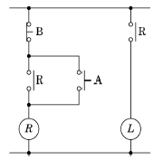
- 인터록
- 자기유지
- 지연논리
- NAND논리
(정답률: 72%)
74. 최대 눈금 1000V, 내부저항 10kΩ인 전압계를 가지고 그림과 같이 전압을 측정하였다. 전압계의 지시가 200V일 때 전압 E는 몇 V인가?
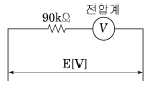
- 800
- 1000
- 1800
- 2000
(정답률: 41%)
75. 그림과 같은 회로는?
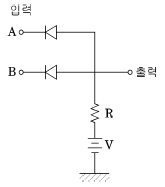
- OR회로
- AND회로
- NOR회로
- NAND회로
(정답률: 57%)
76. 그림의 신호흐름선도에서 C/R의 값은?
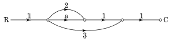
- a+2
- a+3
- a+5
- a+6
(정답률: 77%)
77. 교류의 실횻값에 관한 설명 중 틀린 것은?
- 교류의 최댓값은 실횻값의 √2배이다.
- 전류나 전압의 한주기의 평균치가 실효값이다.
- 상용전원이 220V라는 것은 실횻값을 의미한다.
- 실횻값 100V인 교류와 직류 100V로 같은 전등을 점등하면 그 밝기는 같다.
(정답률: 56%)
78. 변압기의 병렬운전에서 필요하지 않는 조건은?
- 극성이 같을 것
- 출력이 같을 것
- 권수비가 같을 것
- 1차, 2차 정격전압이 같을 것
(정답률: 56%)
79.
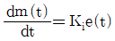
는 어떤 조절기의 출력(조작신호) m(t)과 동작신호 e(t) 사이의 관계를 나타낸 것이다. 이 조절기의 제어동작은? (단, Ki는 상수이다.)- D 동작
- I 동작
- P-I 동작
- P-D 동작
(정답률: 45%)
80. 2진수 0010111101011001(2)을 16진수로 변환하면?
- 3F59
- 2G6A
- 2F59
- 3G6A
(정답률: 78%)
공기의 질량 = 공기량 / 비체적 = 1500 / 0.849 = 1766.96 kg/min
열역학 제1법칙: 열량 = 질량 x 비열 x 온도변화량
건구온도 10℃에서 습구온도 3℃로 가는 과정에서는 열량이 방출되므로 음수로 표기한다.
건구온도 10℃에서 습구온도 3℃까지 열량 = 1766.96 x 0.24 x (10-3) = -100.15 kcal/min
건구온도 3℃에서 건구온도 25℃까지 열량 = 1766.96 x 0.24 x (25-3) = 6360 kcal/min
따라서, 재열기에 필요한 열량은 6360 kcal/min이다.